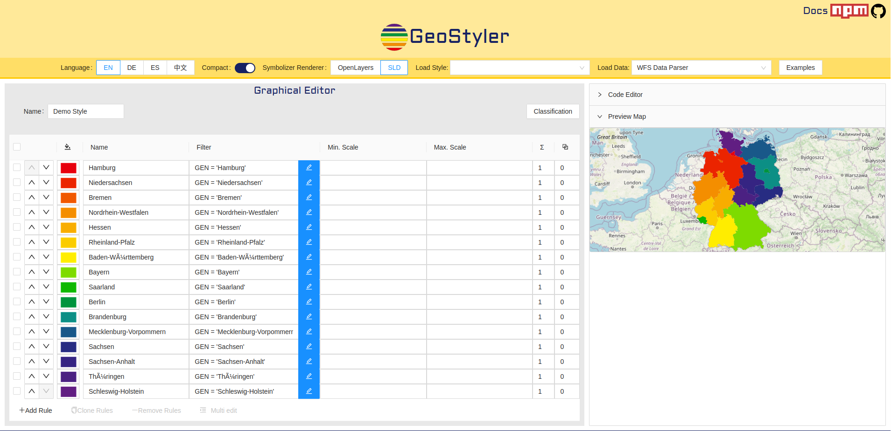
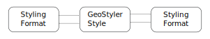

News from GeoStyler
Jan Suleiman, terrestris GmbH & Co. KG
Daniel Koch, terrestris GmbH & Co. KG
Christian Mayer, meggsimum
FOSS4G 2021, Buenos Aires, Argentina
Jan Suleiman

- M.Sc. Geoinformatics
- Full-Stack Engineer @terrestris
Bonn, Germany - GeoStyler Core Developer
Contents
- What is GeoStyler?
- Feature news
- Project news
- Community news
- What's next?
What is GeoStyler?
- Graphical editor for styling geodata
- Converter of styling formats
What is GeoStyler?
Graphical editor for styling geodata



What is GeoStyler?
Converter of styling formats
What is GeoStyler?
Converter of styling formats
Demo Style
Demo Style
Demo Style
Rule 1
circle
{
"name": "Demo Style",
"rules": [
{
"name": "Rule 1",
"symbolizers": [
{
"kind": "Mark",
"wellKnownName": "circle"
}
]
}
]
}
What is GeoStyler?
Converter of styling formats

What is GeoStyler?
Converter of styling formats
LAYER
NAME "point_simple_point"
TYPE POINT
DATA "../shapes/points.shp"
EXTENT -180 -90 180 90
METADATA
"wms_title" "point_simple_point"
"wms_srs" "EPSG:4326"
END
CLASS
STYLE
SYMBOL "circle"
COLOR 0 255 0
SIZE 15
END
END
END
Demo Style
Demo Style
Demo Style
Rule 1
circle
Feature news
Feature news
i18n
Chinese translations
Components
PreviewMap
Components
RasterSymbolizerParser
Mapfile Parser
LAYER
NAME "point_simple_point"
TYPE POINT
DATA "../shapes/points.shp"
EXTENT -180 -90 180 90
METADATA
"wms_title" "point_simple_point"
"wms_srs" "EPSG:4326"
END
CLASS
STYLE
SYMBOL "circle"
COLOR 0 255 0
SIZE 15
END
END
END
Thursday, 29.09.2021 @FOSS4G 2021
Parser
<?xml version="1.0" encoding="UTF-8" standalone="yes"?>
<StyledLayerDescriptor version="1.1.0" xsi:schemaLocation="http://www.opengis.net/sld StyledLayerDescriptor.xsd" xmlns="http://www.opengis.net/sld" xmlns:ogc="http://www.opengis.net/ogc" xmlns:xlink="http://www.w3.org/1999/xlink" xmlns:xsi="http://www.w3.org/2001/XMLSchema-instance" xmlns:se="http://www.opengis.net/se">
<NamedLayer>
<se:Name>Demo Style</se:Name>
<UserStyle>
<se:Name>Demo Style</se:Name>
<se:FeatureTypeStyle>
<se:Rule>
<se:Name>Rule 1</se:Name>
<se:PointSymbolizer uom="http://www.opengeospatial.org/se/units/pixel">
<se:Graphic>
<se:Mark>
<se:WellKnownName>circle</se:WellKnownName>
</se:Mark>
</se:Graphic>
</se:PointSymbolizer>
</se:Rule>
</se:FeatureTypeStyle>
</UserStyle>
</NamedLayer>
</StyledLayerDescriptor>
Project news
Project news
GeoStyler CLI
Automated conversion between styling formats
geostyler -s qgis -t sld -o output.sld input.qml
GeoStyler CLI

Community news
Community news
Contributors
Thanks to all Contributorswho helped improving GeoStyler
What's next?
What's next?
More styling formats
?? geostyler-arcgis-parser ??on-going discussion...
Support of SLD Expressions
<se:SvgParameter name="fill">
<ogc:PropertyName>Feature_Color</ogc:PropertyName>
</se:SvgParameter>
Improving Label Templating
Location: {{city}}, {{state}}
Windowless Layout
Improving responsivenessQGIS Plugin
Import/Export Styles in QGISGeoStyler Code Sprint
Bugfixing, New Features, Community BuildingWhen? TBA
Talks on FOSS4G
- Balthasar Teuscher - GeoStyler Mapfile Parser, 29.09.2021 @Humahuaca
- Marc Jansen, Till Adams - Optimized publishing of map and dataservices with GeoServer, GeoStyler and MapProxy, 30.09.2021 @Buenos Aires
- Marc Jansen, Christian Mayer - The state of GeoExt along with an outlook on its future, 30.09.2021 @Córdoba
Thank you for your attention
and enjoy FOSS4G 2021
Impressum
Authors
Jan Suleiman
terrestris GmbH & Co. KG
Kölnstr. 99, 53111 Bonn
Germany
suleiman@terrestris.de
terrestris GmbH & Co. KG
Kölnstr. 99, 53111 Bonn
Germany
suleiman@terrestris.de
Daniel Koch
terrestris GmbH & Co. KG
Kölnstr. 99, 53111 Bonn
Germany
koch@terrestris.de
terrestris GmbH & Co. KG
Kölnstr. 99, 53111 Bonn
Germany
koch@terrestris.de
License
Slides are published under CC BY-SA
license.
terrestris.github.io/foss4g2021/geostyler
PDF-Version,
git repository
Impressum
Authors
Christian Mayer
meggsimum
Schillerstraße 2a, 67112 Mutterstadt
Germany
chris@meggsimum.de
meggsimum
Schillerstraße 2a, 67112 Mutterstadt
Germany
chris@meggsimum.de
License
Slides are published under CC BY-SA
license.
terrestris.github.io/foss4g2021/geostyler
PDF-Version,
git repository